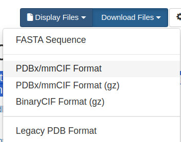

Estimating the binding affinity of the interaction between tandem beta-zippers and fibronectin
This guide is written for project students at undergraduate or MSc level. The page is under construction
Introduction to coordinate files
Several experimental structures (from NMR and X-ray crystallography) are available of bacterial peptides in complex with fibronectin. The structure files can be downloaded from the Protein Data Bank (PDB). For example, see the “Crystal structure of the second and third fibronectin F1 modules in complex with a fragment of Streptococcus pyogenes SfbI-5”, PDB accession code 3ZRZ. Click on Download Files, then choose either the PDBx/mmCIF Format, or the Legacy PDB Format.

This is a simple text file. Open it in a text editor (e.g. Wordpad) and scroll down to see the 3D coordinates of each atom. There are several programs available to visualise coordinate files in this format (PyMOL, VMD, RASMOL), but these will not be covered here.
There are advantages and disadvantages of using coordinates from experimental structures such as these. The primary advantage is the accuracy of the structure - we can have high confidence in the precise spatial arrangement of all atoms in the coordinate file. There are some things we need to aware of:
- loop regions may be disordered. The amino acids in these flexible regions are often missing in the coordinate files, therefore there is a break, or gap in the polypeptide.
- Some amino acids may have been modelled in two or more conformations (alternative conformations). Or, part of the side-chain might be missing.
- The coordinate file (the asymmetric unit) may have more than one copy of the molecule.
- The coordinate files will often contain other non-protein components. If you look at 3ZRZ above, you will see a glycerol molecule, a sulphate ion and many water molecules. In addition, the bacterial peptide is acetylated at the N-terminus (ACE residue)
To calculate an accurate binding affinity between two molecules, we need accurate coordinate files that include all the amino acids. These missing (or extra) parts will need to be corrected.
One option would be to edit the text file to remove these non-protein atoms, then rebuild and model the missing loops and side-chains. However, in 2021, Alphafold2 was released, which, for the first time made it possible to accurately predict the 3D-structure of a protein based only on the amino acid sequence (Jumper et al., 2021). The accuracy of these protein models has been shown to be excellent, especially where there is a prior structure in the PDB with high sequence identity to the target. Then, in 2024 Alphafold3 was released (Abramson et al., 2024) allowing the accurate prediction of complexes, for example the interaction between two distinct proteins. The Alphafold server is available here. You will need a google account to use it. You will notice from this server that the input is simply an amino acid sequence in one-letter code.
Finding the correct amino acid sequences
In the example, we will find the amino acid sequences that correspond to the interaction between 2F1-5F1 and FnBPA1. This is the interaction described on row 1 of Table 1 in Meenan et al, 2007.
Fibronectin domains 2F1 to 5F1
The Uniprot entry for human fibronectin is P02751. Click on Family and Domains, then scroll down to find the 2nd type-I domain (2F1), this is called “Fibronectin type-I 2” and it is residues 95-138. Scroll down further to the 5th type-I domain (5F1), this is called “Fibronectin type-I 5” and it is residues 229-273. Therefore, 2F1-5F1 must be all of these residues 95-273.
Scroll down to the sequence section. Select residues 95-273, copy and paste the sequence into a text editor and give it a sensible filename. Below, I have added a title in FASTA format
>2F1-5F1
ETCFDKYTGNTYRVGDTYERPKDSMIWDCTCIGAGRGRISCTIANRCHEGGQSYKIGDTWRRPHETGGYMLECVCLGNGKGEWTCKPIAEKCFDHAAGTSYVVGETWEKPYQGWMMVDCTCLGEGSGRITCTSRNRCNDQDTRTSYRIGDTWSKKDNRGNLLQCICTGNGRGEWKCERHFibronectin-binding protein A (FnBPA)
Notice from Table 1 in Meenan et al, that FnBPA1 corresponds to residues 512-550. Go to the uniprot entry for FnBPA P14738, find the amino acids 512-550, and paste them into a text file.
>FnBPA1(512-550)
GPIIQNNKFEYKEDTIKETLTGQYDKNLVTTVEEEYDSSNotice that this is identical to the amino acid sequence for FnBPA1 in Figure 1, part B.
Generating models using the AlphaFold Server
Now you have the amino acid sequences in one-letter code, it is straightforward to generate a 3D model of the protein-protein interaction. Go to the Alphafold server, paste in the sequence of fibronectin (2F1-5F1), click on “Add entity”, then paste in the corresponding sequence of the bacterial peptide (FnBPA1). Click on “Continue and preview job”. Once done, your completed jobs will appear as a list below. Click on the 3 dots on the right-side and download the results as a zip file. Extract the zip file, then look for the five models (the ones ending in .cif). You can visualise these in PyMOL.
Calculating binding affinity using PRODIGY
Streptococcal fibronectin binding protein I (SfbI)
References
- Abramson, J., Adler, J., Dunger, J. et al. Accurate structure prediction of biomolecular interactions with AlphaFold 3. Nature 630, 493–500 (2024).
- Jumper, J., Evans, R., Pritzel, A. et al. Highly accurate protein structure prediction with AlphaFold. Nature 596, 583–589 (2021). https://doi.org/10.1038/s41586-021-03819-2